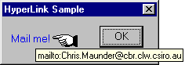

 Download source files (5.5K) or Download sample project (30K)
This is a simple hyperlink control that can be plugged into any dialog. There are already a few examples of this in circulation (PJ Naughter, and one from Paul DiLascia from MSJ) but none had all the features that I wanted. I have used the "GotoURL" function by Stuart Patterson in the Aug 97 WDJ. It is more robust than a simple "ShellExecute", and I have modified it to be a little more UNICODE friendly.
The hyperlink is initially coloured blue, but changes colour when the cursor is over it, and after the user has clicked on it. The cursor that appears when the mouse pointer is over the link can easily be set using CHyperLink::SetLinkCursor, as can the link colours and underlining. The default cursor is a small pointing hand (cursor #106 from the winhlp32.exe file - Thanks to Paul DiLascia of MSJ for that one). There is also a tooltip for the link that dispalys the underlying URL of the control.
To use the hyperlink control, just create a static control (eg IDC_HYPERLINK) and attach it to a member variable of type CHyperLink. The URL for the link is taken as the caption of the static control unless otherwise specified. If no caption for the control is specified then it is set as the URL. If neither exists, then a debug assertion occurs.
The control can auto-size itself to fit the size of the caption (to preserve a true hyperlink look and feel). The resizing will honour the SS_CENTERIMAGE, SS_LEFT, SS_RIGHT and SS_CENTER flags.
The control is very simple. The button click and colour notifications are handled by the control, and appropriate fonts and colours selected according to the state of the link. The only tricky bit is handling the button click. In order to do this the static control must have the SS_NOTIFY bit set and a ON_CONTROL_REFLECT handler for the STN_CLICKED message is installed.
To actually follow the link, "ShellExecute" is called to open the URL, but if this fails, then the registry is examined in order to find a likely candidate for .htm files. If one is found then this it is launched with the hope that it can handle the URL string supplied. In any case, an error message is displayed on failure.
void SetURL(CString strURL); // Get and set the target URL for the link
CString GetURL();
// Set (and get) the Link (unvisited and unvisited) colours
void SetColours(COLORREF crLinkColour, COLORREF crVisitedColour
COLORREF crHoverColour = -1);
COLORREF GetLinkColour();
COLORREF GetVisitedColour();
COLORREF GetHoverColour();
// Set (and get) whether or not the link has been visited
void SetVisited(BOOL bVisited = TRUE);
BOOL GetVisited();
void SetLinkCursor(HCURSOR hCursor); // Set the cursor for the link
// Set (and get) whether or not ot underline the link)
void SetUnderline(BOOL bUnderline = TRUE);
BOOL GetUnderline();
// Set (and get) whether to autosize the control to fit the caption text
void SetAutoSize(BOOL bAutoSize = TRUE);
BOOL GetAutoSize();
Note on SetColour: This allows the unvisited/visited and hover colours to be specifed. If the Hover colour (the colour the link appears when the cursor is over it) is -1, then the system highlight colour is used.
| Goto HomePage |
|
Contact me: zafir@dsp.com
|